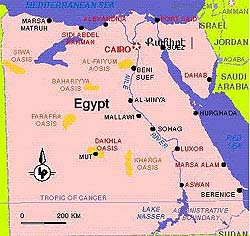

Yrgov Kardes
On the internet I found two maps. One was a map of Egypt and one was a map of Iran. These are maps of the countries my parents came from.
|  |
H7P7U7M7 Manovgyan Dymirjyan Tbrox
Avydis Gyrboyan
(Wyratar2i4r n,ylow P7 @y-nargi n,anu)
|
Yrgov Kardes |
|
|
On the internet I found two maps. One was a map of Egypt and one was a map of Iran. These are maps of the countries my parents came from.
H7P7U7M7 Manovgyan Dymirjyan Tbrox Avydis Gyrboyan (Wyratar2i4r n,ylow P7 @y-nargi n,anu) |